شركة مخازن طبية آباديس المعرفية
اعرف المزيد عنا
بعد سنوات من التخطيط واستمرار الحركة التي تم انطلاقها، ومع العمل بالنشاط وإجراء التغييرات في نظام الإدارة، أنشأنا شركة آباديس القائمة على المعرفة في عام 2017، لكي نبدأ بإنتاج أكياس شفط آباديس ذات الاستعمال الواحد، وأيضاً نخطو خطوات أكبر في تحقيق أهدافنا التي تتمثل في مكافحة عدوى المستشفيات والمعدات الطبية؛ فأدركنا بأننا مستعدون لإحداث التأثير، التأثير في مكافحة عدوى المستشفيات.
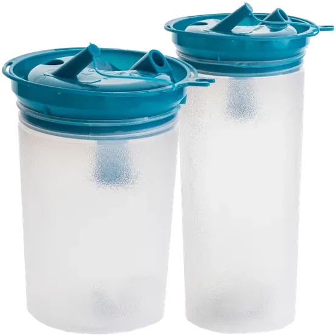
من نحن
اعرف أكثر عن مجموعة آباديس المعرفية
شركة مخازن طبية آباديس المعرفية تعتمد على المعرفة الحديثة وتقديم منتجات وحلول مبتكرة في إدارة السوائل والنفايات العفنية في المستشفيات، وقد اتخذت خطوات فعّالة في السيطرة على العدوى المستشفوية وتحقيق التنمية المستدامة. هدفنا هو تحقيق تأثير حقيقي في تحسين صحة المراكز الصحية وحماية البيئة.
أهدافنا
- إدارة مثلى للنفايات العفنية والسوائل المستشفوية
- تقليل والسيطرة على العدوى الناتجة عن النفايات والسوائل المستشفوية
- نشر ثقافة الاستخدام الأمثل لحلولنا ومنتجاتنا في المراكز الصحية والمستشفيات
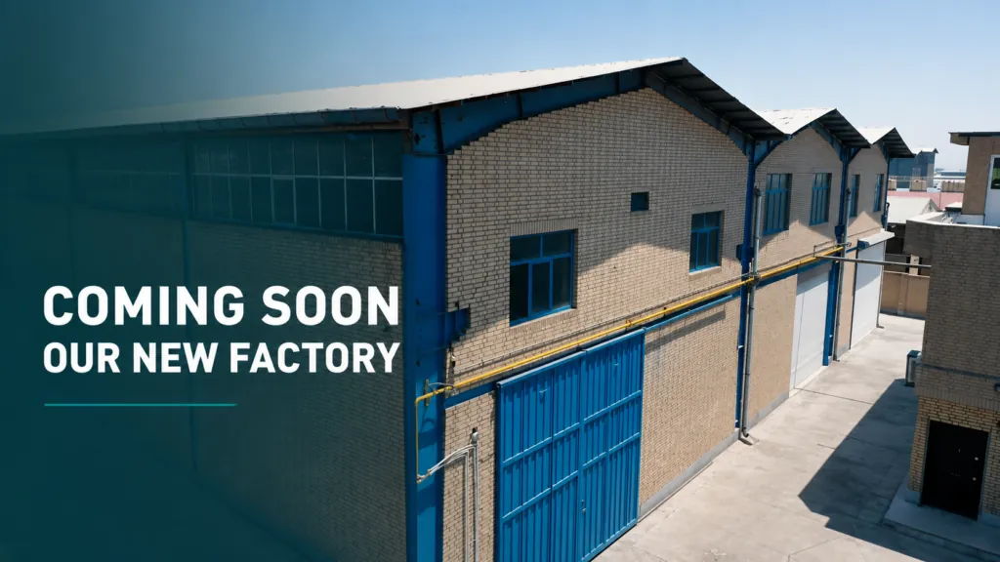
الحلول والمنتجات
من منتجات الشفط المتخصصة إلى حلول مبتكرة لرعاية أكثر أماناً وكفاءة.
المنتجات والحلول والاستخدامات والابتكار — فلسفة الحلول


نحن نؤثر بقدر طرف إصبععليكعلى الطبيعةعلى العالم
أثر آباديس
تمثل هذه الإحصائيات أثر آباديس استناداً إلى بيانات أنظمة MIS وBI وAI في الشركة. ويوفر استهلاك المياه تقديراً ناتجاً عن إلغاء غسيل عبوات الشفط.
أثر آباديس، الآن
٠ لتر من الماء تم توفيره منذ ٢١ مارس ٢٠٢٦ (تقديري)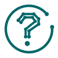
لماذا آباديس؟
القيم المضافة لأكياس الشفط ذات الاستعمال الواحد
نظام شفط مغلق بمرشح كاره للماء مضاد للبكتيريا بنسبة ٩٩٫٩٩٪
تزيل أكياس الشفط أحادية الاستخدام من آباديس التفريغ اليدوي وغسيل العبوات التقليدية، وتقطع سلسلة انتقال عدوى المستشفيات (HAI) في غرفة العمليات والأقسام الحرجة، وتحمي مضخة الشفط المركزية.
تأسست شركة مخازن طبية آباديس المعرفية في عام 2018 باستخدام أحدث المعدات والآلات وبالتعاون مع القوى المتخصصة. تُعدّ هذه الشركة أكبر منتج للحقائب السائلة ذات الاستخدام الواحد في منطقة الشرق الأوسط، بطاقة إنتاجية سنوية تصل إلى 5 مليون حقيبة سحب.
- الضمان والكفالة
- ضمان الجودة
- التواصل المستمر بين قسم المبيعات والفريق الفني مع المراكز الطبية
- التوصيل السريع للمنتج
المقالات والأخبار
الأعضاء
الأعضاء
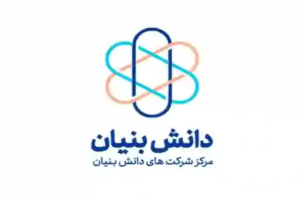
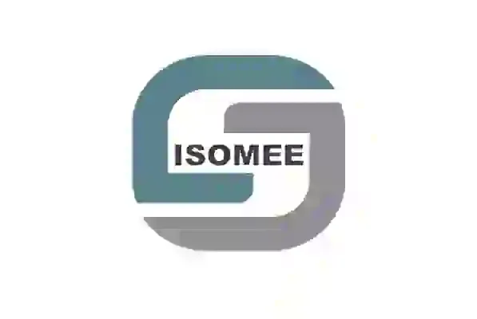
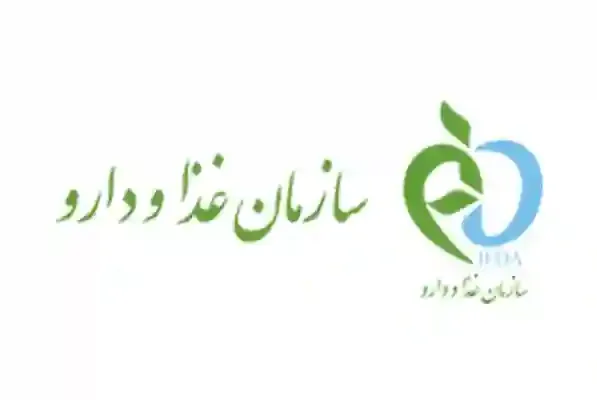
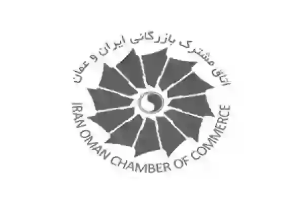
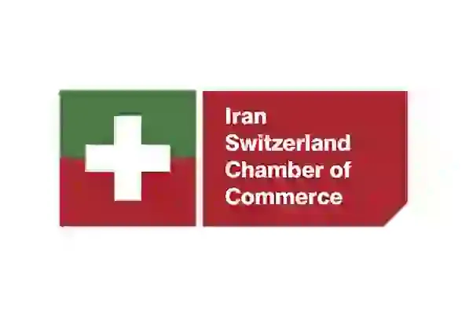
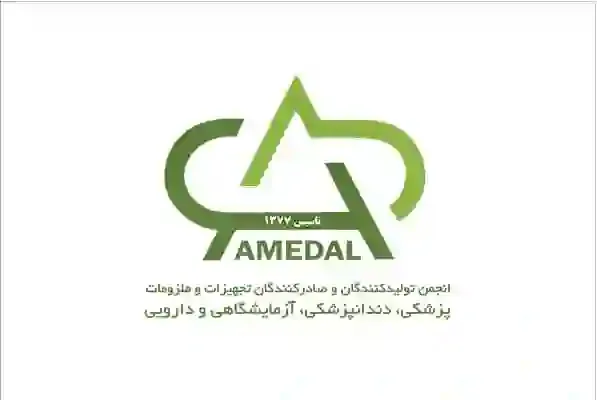
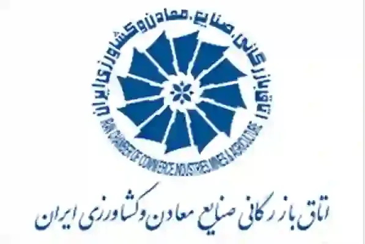
عملاؤنا
عملاؤنا
نماذج من شعارات المراكز الطبية مع آباديس، من أصل ١٬٢٨٤ مركزًا طبيًا نشطًا.
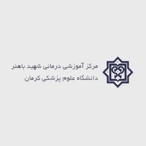
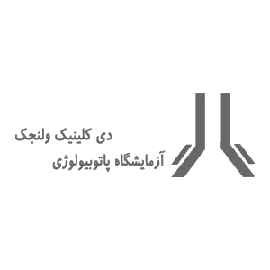
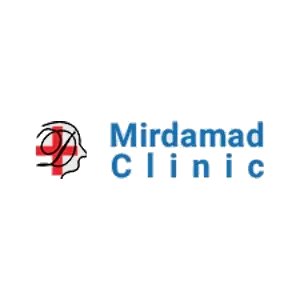
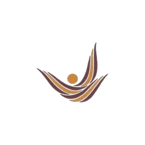
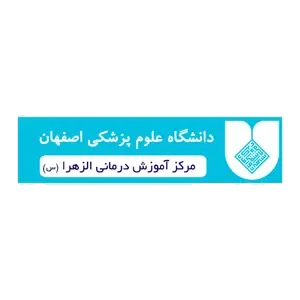
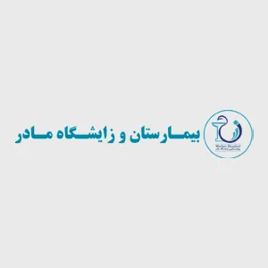
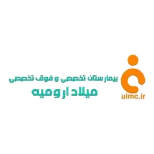
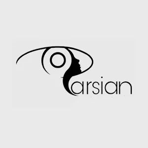
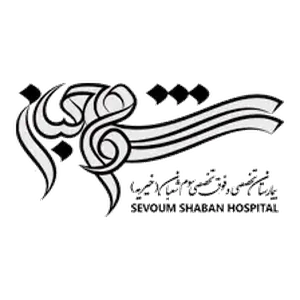
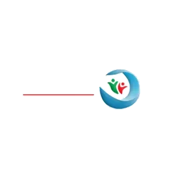
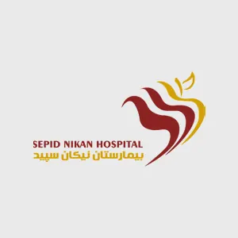
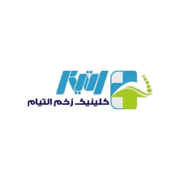
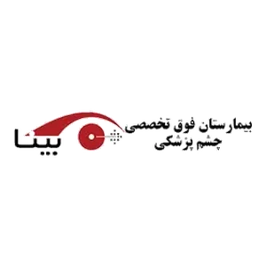
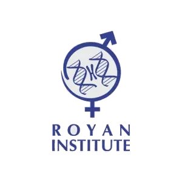
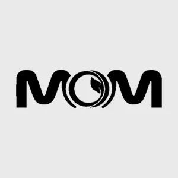
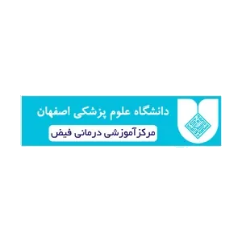
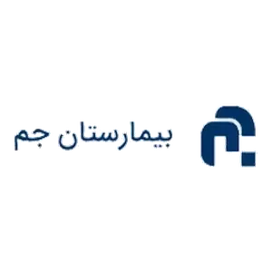
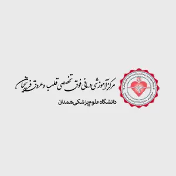
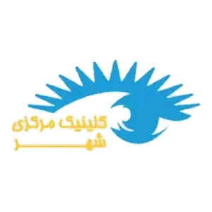
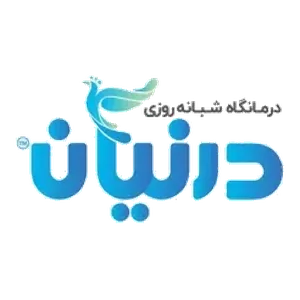
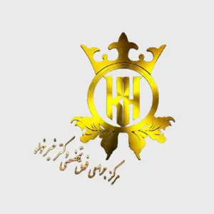
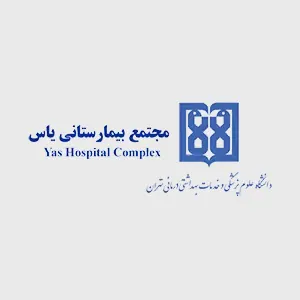